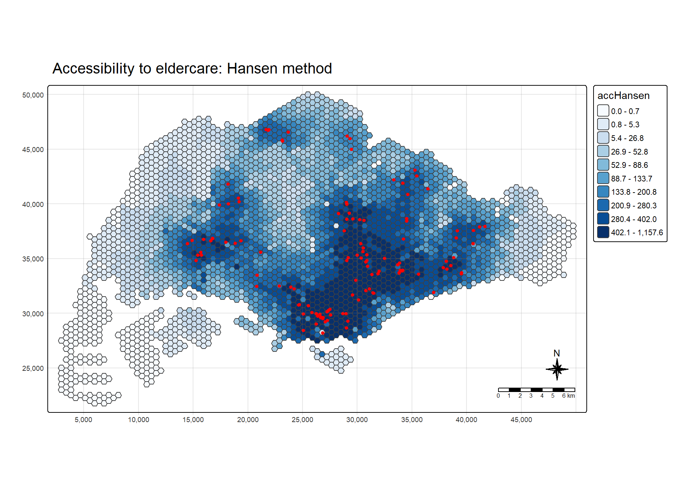
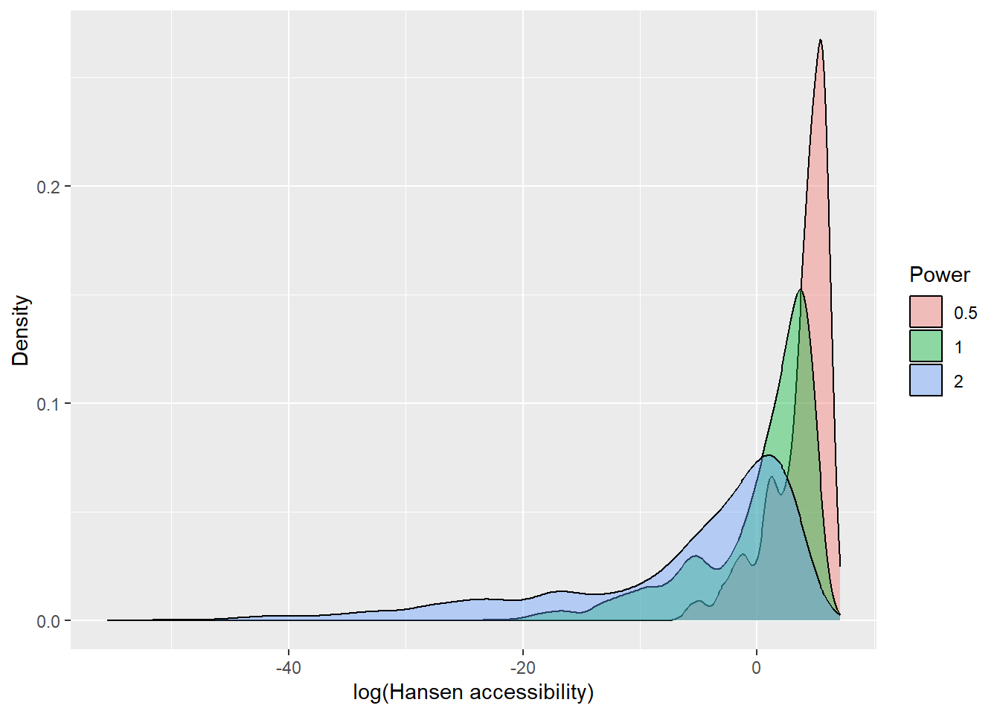
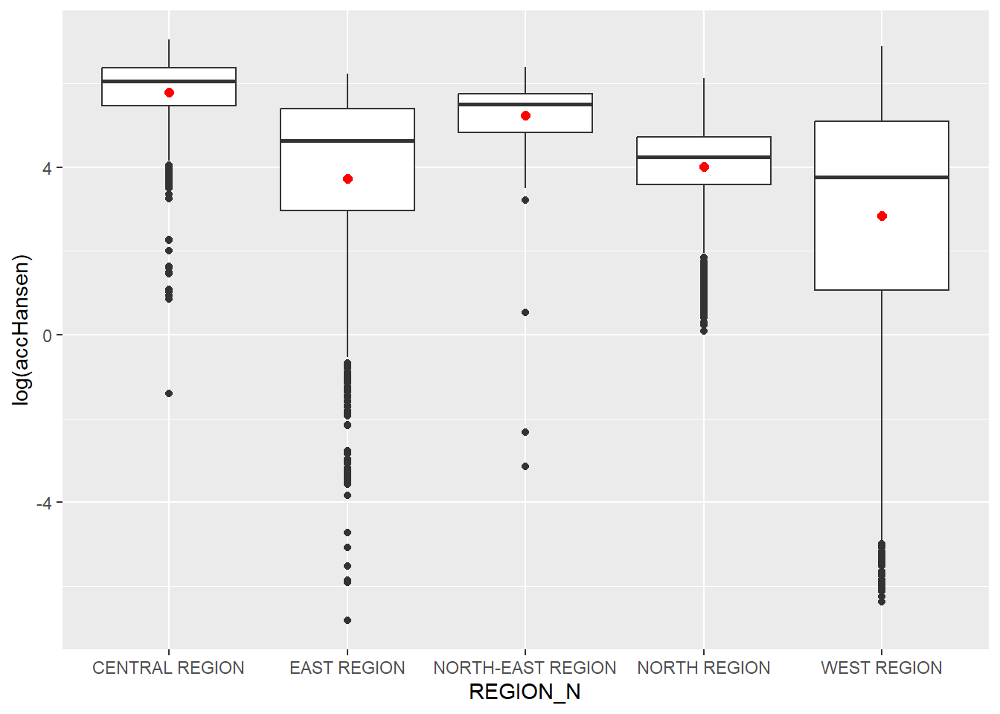
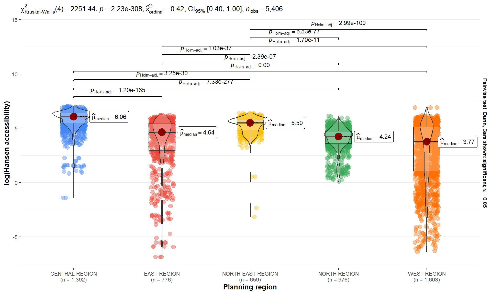
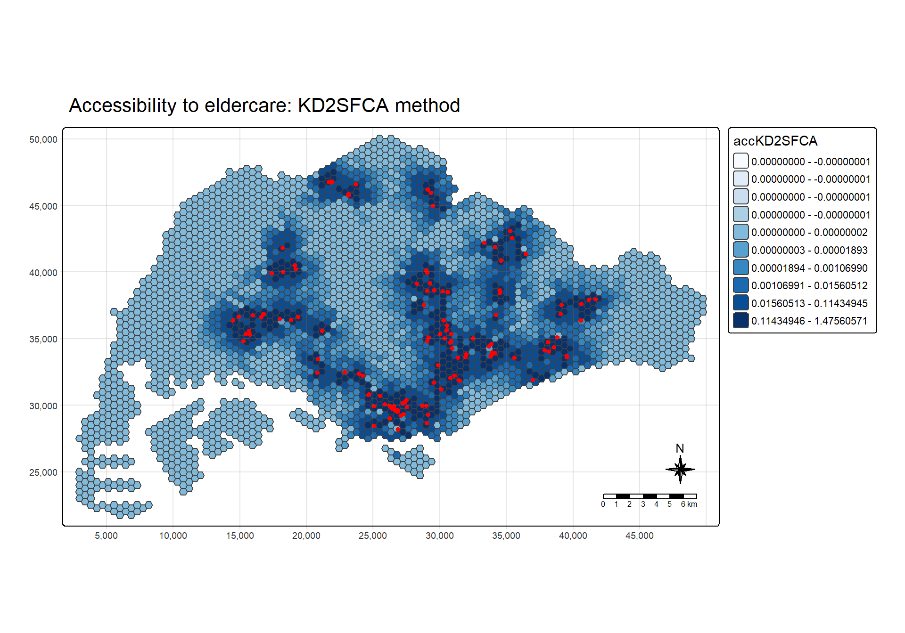
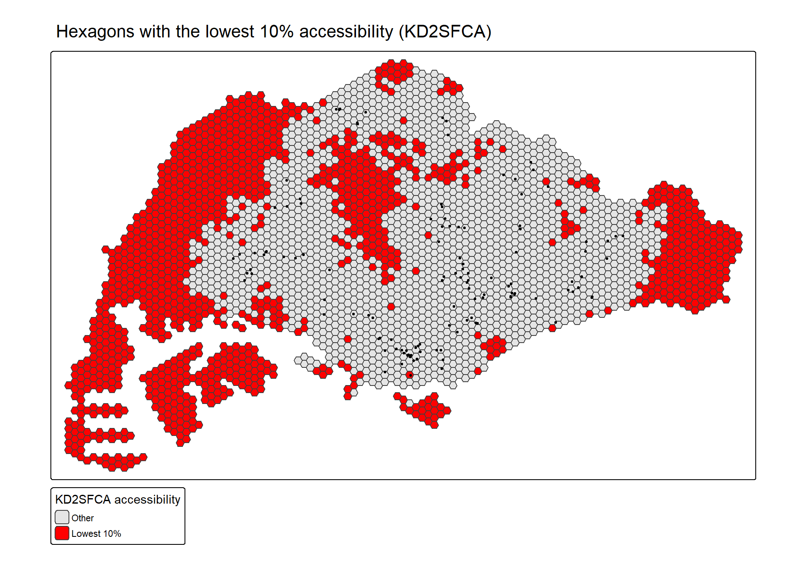
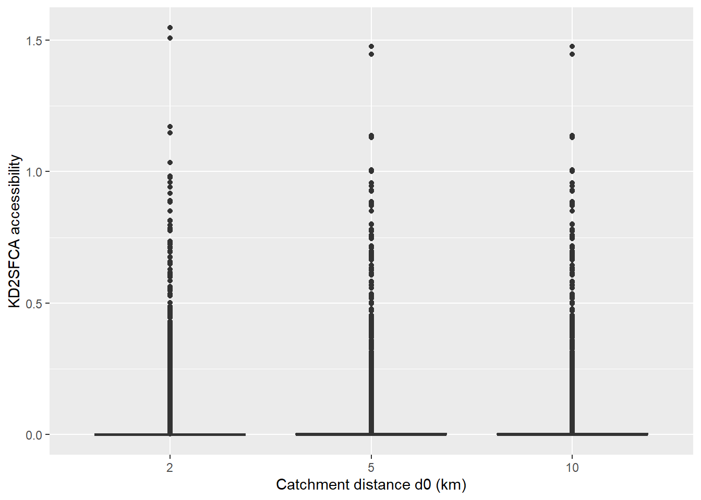
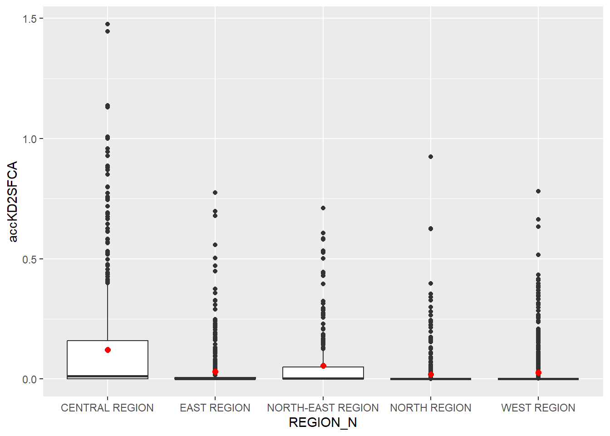
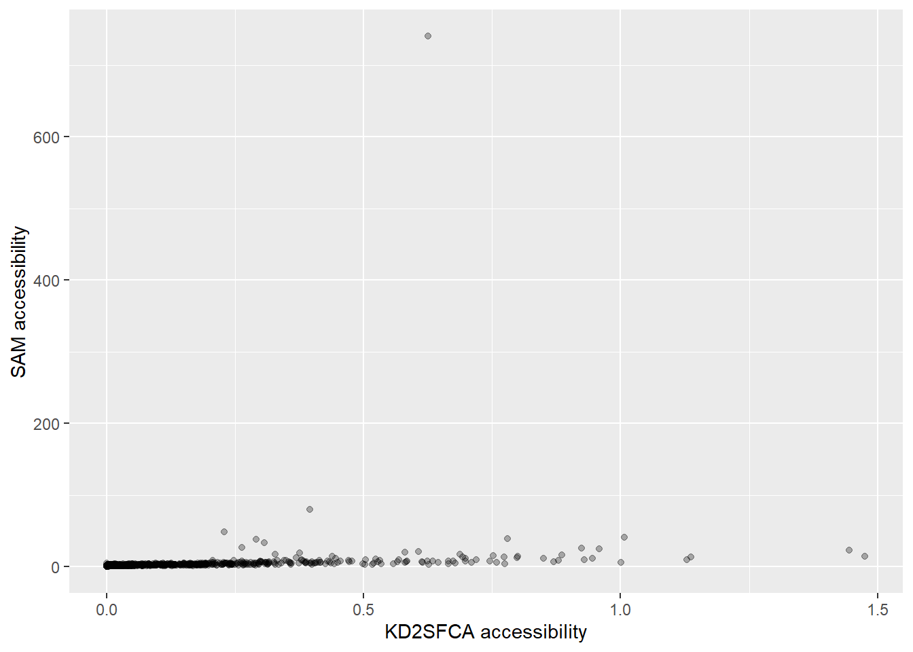

set.seed(1234)
pacman::p_load(tmap, SpatialAcc, sf,
ggstatsplot, reshape2,
tidyverse)Modelling Geographical Accessibility
Hands-on Exercise 7
Getting Started
We split Singapore into small hexagons, work out the travel distance from every hexagon to every eldercare centre, and then turn those distances into an accessibility score using three different methods: Hansen, KD2SFCA and SAM.
Geospatial Data Wrangling
Importing Geospatial Data
mpsz <- st_read(dsn = "data/geospatial",
layer = "MP14_SUBZONE_NO_SEA_PL")Reading layer `MP14_SUBZONE_NO_SEA_PL' from data source
`D:\1.Abinav\1.SMU\Term 4\Geospatial Analysis\Abinav0905\GAA-Abinav-Test\Hands_on_Ex\Hands_onEx07\data\geospatial'
using driver `ESRI Shapefile'
Simple feature collection with 323 features and 15 fields
Geometry type: MULTIPOLYGON
Dimension: XY
Bounding box: xmin: 2667.538 ymin: 15748.72 xmax: 56396.44 ymax: 50256.33
Projected CRS: SVY21hexagons <- st_read(dsn = "data/geospatial",
layer = "hexagons")Reading layer `hexagons' from data source
`D:\1.Abinav\1.SMU\Term 4\Geospatial Analysis\Abinav0905\GAA-Abinav-Test\Hands_on_Ex\Hands_onEx07\data\geospatial'
using driver `ESRI Shapefile'
Simple feature collection with 3125 features and 6 fields
Geometry type: POLYGON
Dimension: XY
Bounding box: xmin: 2667.538 ymin: 21506.33 xmax: 50010.26 ymax: 50256.33
Projected CRS: SVY21 / Singapore TMeldercare <- st_read(dsn = "data/geospatial",
layer = "ELDERCARE")Reading layer `ELDERCARE' from data source
`D:\1.Abinav\1.SMU\Term 4\Geospatial Analysis\Abinav0905\GAA-Abinav-Test\Hands_on_Ex\Hands_onEx07\data\geospatial'
using driver `ESRI Shapefile'
Simple feature collection with 120 features and 19 fields
Geometry type: POINT
Dimension: XY
Bounding box: xmin: 14481.92 ymin: 28218.43 xmax: 41665.14 ymax: 46804.9
Projected CRS: SVY21 / Singapore TMThree layers come in here. The subzone boundary gives us the planning regions, the hexagons are the origins (where people live), and the eldercare points are the destinations (where people want to get to).
Updating CRS Information
mpsz <- mpsz %>% st_transform(3414)
eldercare <- eldercare %>% st_transform(3414)
hexagons <- hexagons %>% st_transform(3414)st_crs(mpsz)Coordinate Reference System:
User input: EPSG:3414
wkt:
PROJCRS["SVY21 / Singapore TM",
BASEGEOGCRS["SVY21",
DATUM["SVY21",
ELLIPSOID["WGS 84",6378137,298.257223563,
LENGTHUNIT["metre",1]]],
PRIMEM["Greenwich",0,
ANGLEUNIT["degree",0.0174532925199433]],
ID["EPSG",4757]],
CONVERSION["Singapore Transverse Mercator",
METHOD["Transverse Mercator",
ID["EPSG",9807]],
PARAMETER["Latitude of natural origin",1.36666666666667,
ANGLEUNIT["degree",0.0174532925199433],
ID["EPSG",8801]],
PARAMETER["Longitude of natural origin",103.833333333333,
ANGLEUNIT["degree",0.0174532925199433],
ID["EPSG",8802]],
PARAMETER["Scale factor at natural origin",1,
SCALEUNIT["unity",1],
ID["EPSG",8805]],
PARAMETER["False easting",28001.642,
LENGTHUNIT["metre",1],
ID["EPSG",8806]],
PARAMETER["False northing",38744.572,
LENGTHUNIT["metre",1],
ID["EPSG",8807]]],
CS[Cartesian,2],
AXIS["northing (N)",north,
ORDER[1],
LENGTHUNIT["metre",1]],
AXIS["easting (E)",east,
ORDER[2],
LENGTHUNIT["metre",1]],
USAGE[
SCOPE["Cadastre, engineering survey, topographic mapping."],
AREA["Singapore - onshore and offshore."],
BBOX[1.13,103.59,1.47,104.07]],
ID["EPSG",3414]]All three layers get the same coordinate system, SVY21 (EPSG 3414), which is measured in metres. That matters here because every distance in the accessibility models is in metres.
Cleaning and Updating Attribute Fields
eldercare <- eldercare %>%
select(fid, ADDRESSPOS) %>%
mutate(capacity = 100)
hexagons <- hexagons %>%
select(fid) %>%
mutate(demand = 100)Both layers have lots of columns we do not need, so only the id and address are kept. Then two new columns are added: demand for every hexagon and capacity for every eldercare centre. Both are set to 100 as a placeholder.
Aspatial Data Handling and Wrangling
Importing Distance Matrix
# Origin-destination distance matrix: csv
ODMatrix <- read_csv("data/aspatial/OD_Matrix.csv", skip = 0)Tidying Distance Matrix
distmat <- ODMatrix %>%
select(origin_id, destination_id, total_cost) %>%
arrange(origin_id, destination_id) %>%
pivot_wider(names_from = destination_id,
values_from = total_cost) %>%
select(-origin_id)distmat_km <- as.matrix(distmat / 1000)The imported file has one row for every origin and destination pair, which makes it a very long list. The accessibility functions want a grid instead, with one row per hexagon and one column per eldercare centre, and pivot_wider() does that reshaping. The arrange() before it keeps the rows and columns in id order so they line up with the hexagon and eldercare tables. Dividing by 1000 turns metres into kilometres.
Modelling and Visualising Accessibility Using Hansen Method
Computing Hansen’s Accessibility
acc_Hansen <- data.frame(ac(hexagons$demand,
eldercare$capacity,
distmat_km,
#d0 = 50,
power = 2,
family = "Hansen"))colnames(acc_Hansen) <- "accHansen"acc_Hansen <- as_tibble(acc_Hansen)hexagon_Hansen <- bind_cols(hexagons, acc_Hansen)acc_Hansen <- data.frame(ac(hexagons$demand,
eldercare$capacity,
distmat_km,
#d0 = 50,
power = 0.5,
family = "Hansen"))
colnames(acc_Hansen) <- "accHansen"
acc_Hansen <- as_tibble(acc_Hansen)
hexagon_Hansen <- bind_cols(hexagons, acc_Hansen)Hansen’s measure adds up the eldercare places reachable from each hexagon, giving closer centres more weight than far away ones. The power controls how quickly that weight drops as distance grows. The first chunks do it step by step with a power of 2, and the single chunk does the same job in one go.
Visualising Hansen’s Accessibility
mapex <- st_bbox(hexagons)tm_shape(hexagon_Hansen,
bbox = mapex) +
tm_polygons(fill = "accHansen",
fill.scale = tm_scale_intervals(
style = "quantile",
n = 10,
values = "brewer.blues")) +
tm_shape(eldercare) +
tm_dots(size = 0.3,
fill = "red",
col = "black") +
tm_title("Accessibility to eldercare: Hansen method") +
tm_layout(frame = TRUE) +
tm_compass(type = "8star", size = 2) +
tm_scalebar() +
tm_grid(alpha = 0.2)
Darker hexagons have better access. The darkest areas should sit near clusters of red dots, with lighter areas where the nearest centre is far away.
How Much Does the Distance Decay Matter?
hansen_power <- map_dfr(c(0.5, 1, 2), function(p) {
tibble(power = factor(p),
accHansen = as.numeric(ac(hexagons$demand,
eldercare$capacity,
distmat_km,
power = p,
family = "Hansen")))
})ggplot(data = hansen_power,
aes(x = log(accHansen), fill = power)) +
geom_density(alpha = 0.4) +
labs(x = "log(Hansen accessibility)",
y = "Density",
fill = "Power")
hansen_power %>%
group_by(power) %>%
summarise(median = median(accHansen),
max = max(accHansen))# A tibble: 3 × 3
power median max
<fct> <dbl> <dbl>
1 0.5 88.7 1158.
2 1 6.37 538.
3 2 0.0683 198.The writeup uses a power of 2 in one place and 0.5 in another, so it is worth seeing what that choice does. A higher power should make far away centres count for much less, while a lower power lets distant centres still contribute. The density plot and the small table compare 0.5, 1 and 2 side by side.
Statistical Graphic Visualisation
hexagon_Hansen <- st_join(hexagon_Hansen, mpsz,
join = st_intersects)ggplot(data = hexagon_Hansen,
aes(y = log(accHansen),
x = REGION_N)) +
geom_boxplot() +
geom_point(stat = "summary",
fun = "mean",
colour = "red",
size = 2)
The hexagon table does not know which planning region each hexagon sits in, so it is joined to the subzone boundary first. The boxplot then compares the scores across regions, with a red dot marking each region’s average. The log is used so a few very large values do not squash the rest of the plot.
Is the Difference Between Regions Real?
hansen_region <- hexagon_Hansen %>%
st_drop_geometry() %>%
filter(!is.na(REGION_N)) %>%
mutate(log_accHansen = log(accHansen))ggbetweenstats(data = hansen_region,
x = REGION_N,
y = log_accHansen,
type = "nonparametric",
xlab = "Planning region",
ylab = "log(Hansen accessibility)")
A boxplot shows differences but cannot say whether they are bigger than what chance alone would give. ggstatsplot was loaded at the start but the writeup never uses it, so this puts it to work. ggbetweenstats runs a Kruskal Wallis test, which does not assume the scores follow a normal distribution, and then compares the regions in pairs.
Modelling and Visualising Accessibility Using KD2SFCA Method
Computing KD2SFCA’s Accessibility
acc_KD2SFCA <- data.frame(ac(hexagons$demand,
eldercare$capacity,
distmat_km,
d0 = 5,
power = 2,
family = "KD2SFCA"))
colnames(acc_KD2SFCA) <- "accKD2SFCA"
acc_KD2SFCA <- as_tibble(acc_KD2SFCA)
hexagon_KD2SFCA <- bind_cols(hexagons, acc_KD2SFCA)KD2SFCA is a more careful method than Hansen. It only counts eldercare centres within a set distance of each hexagon (d0 = 5 km here), and it also takes into account how many other hexagons are competing for the same centre. A centre that serves a huge crowd contributes less to each person than one that serves only a few.
Visualising KD2SFCA’s Accessibility
tm_shape(hexagon_KD2SFCA,
bbox = mapex) +
tm_polygons(fill = "accKD2SFCA",
fill.scale = tm_scale_intervals(
style = "quantile",
n = 10,
values = "brewer.blues")) +
tm_shape(eldercare) +
tm_dots(size = 0.3,
fill = "red",
col = "black") +
tm_title("Accessibility to eldercare: KD2SFCA method") +
tm_layout(frame = TRUE) +
tm_compass(type = "8star", size = 2) +
tm_scalebar() +
tm_grid(alpha = 0.2)
Same map as before but with the KD2SFCA scores, so it is worth comparing it with the Hansen map to see which areas change colour.
Extra: Where Is Access Lowest?
hexagon_KD2SFCA <- hexagon_KD2SFCA %>%
mutate(low_access = factor(
accKD2SFCA <= quantile(accKD2SFCA, 0.1, na.rm = TRUE),
levels = c(FALSE, TRUE),
labels = c("Other", "Lowest 10%")))tm_shape(hexagon_KD2SFCA,
bbox = mapex) +
tm_polygons(fill = "low_access",
fill.scale = tm_scale_categorical(
values = c("grey90", "red")),
fill.legend = tm_legend(
title = "KD2SFCA accessibility")) +
tm_shape(eldercare) +
tm_dots(size = 0.2,
fill = "black") +
tm_title("Hexagons with the lowest 10% accessibility (KD2SFCA)") +
tm_layout(frame = TRUE)
A map with ten shades is good for the overall picture, but a planner mostly wants to know where the problem spots are. This one shades only the worst 10% of hexagons in red and leaves everything else grey, with the eldercare centres as black dots, so under served areas stand out straight away.
How Much Does the 5 km Cut Off Matter?
kd2sfca_d0 <- map_dfr(c(2, 5, 10), function(d) {
tibble(d0 = factor(d),
accKD2SFCA = as.numeric(ac(hexagons$demand,
eldercare$capacity,
distmat_km,
d0 = d,
power = 2,
family = "KD2SFCA")))
})kd2sfca_d0 %>%
group_by(d0) %>%
summarise(median = median(accKD2SFCA, na.rm = TRUE),
share_zero = mean(accKD2SFCA == 0, na.rm = TRUE))# A tibble: 3 × 3
d0 median share_zero
<fct> <dbl> <dbl>
1 2 0 0.781
2 5 0.0000000325 0.410
3 10 0.0000000325 0.204ggplot(data = kd2sfca_d0,
aes(x = d0, y = accKD2SFCA)) +
geom_boxplot() +
labs(x = "Catchment distance d0 (km)",
y = "KD2SFCA accessibility")
The writeup picks 5 km for the catchment without saying why, so here the same model is run with 2, 5 and 10 km. A small catchment is stricter, so more hexagons should end up with no reachable centre at all, which is what the share_zero column shows. A large catchment is more forgiving, so the scores should look more alike across the island.
Statistical Graphic Visualisation
hexagon_KD2SFCA <- st_join(hexagon_KD2SFCA, mpsz,
join = st_intersects)ggplot(data = hexagon_KD2SFCA,
aes(y = accKD2SFCA,
x = REGION_N)) +
geom_boxplot() +
geom_point(stat = "summary",
fun = "mean",
colour = "red",
size = 2)
Same idea as the Hansen boxplot, with planning regions along the bottom and accessibility up the side. This time the raw scores are plotted without a log, so the differences between regions show on their original scale.
Modelling and Visualising Accessibility Using Spatial Accessibility Measure (SAM) Method
Computing SAM Accessibility
acc_SAM <- data.frame(ac(hexagons$demand,
eldercare$capacity,
distmat_km,
d0 = 5,
power = 2,
family = "SAM"))
colnames(acc_SAM) <- "accSAM"
acc_SAM <- as_tibble(acc_SAM)
hexagon_SAM <- bind_cols(hexagons, acc_SAM)SAM is the third method. It is run with the same 5 km catchment and power of 2 as KD2SFCA, so any difference between the two maps comes from the method and not from the settings.
Visualising SAM’s Accessibility
tm_shape(hexagon_SAM,
bbox = mapex) +
tm_polygons(fill = "accSAM",
fill.scale = tm_scale_intervals(
style = "quantile",
n = 10,
values = "brewer.blues")) +
tm_shape(eldercare) +
tm_dots(size = 0.3,
fill = "red",
col = "black") +
tm_title("Accessibility to eldercare: SAM method") +
tm_layout(frame = TRUE) +
tm_compass(type = "8star", size = 2) +
tm_scalebar() +
tm_grid(alpha = 0.2)
Statistical Graphic Visualisation
hexagon_SAM <- st_join(hexagon_SAM, mpsz,
join = st_intersects)ggplot(data = hexagon_SAM,
aes(y = accSAM,
x = REGION_N)) +
geom_boxplot() +
geom_point(stat = "summary",
fun = "mean",
colour = "red",
size = 2)
The last boxplot completes the set, so we now have maps and region comparisons for all three methods.
Do the Three Methods Agree?
acc_all <- bind_cols(acc_Hansen, acc_KD2SFCA, acc_SAM)cor(acc_all,
method = "spearman",
use = "pairwise.complete.obs") accHansen accKD2SFCA accSAM
accHansen 1.0000000 0.9048618 0.9860652
accKD2SFCA 0.9048618 1.0000000 0.9091429
accSAM 0.9860652 0.9091429 1.0000000ggplot(data = acc_all,
aes(x = accKD2SFCA, y = accSAM)) +
geom_point(alpha = 0.3) +
labs(x = "KD2SFCA accessibility",
y = "SAM accessibility")
After three methods, the obvious question is whether they tell the same story. The scores are put side by side using the original score tables and not the hexagon tables, because the region join repeats hexagons that touch more than one subzone, so those rows would no longer line up. The Hansen column here is the power 0.5 version. A correlation close to 1 means the methods rank the hexagons in nearly the same order. Spearman is used because it only looks at rankings, so the very different scales of the three scores do not matter.